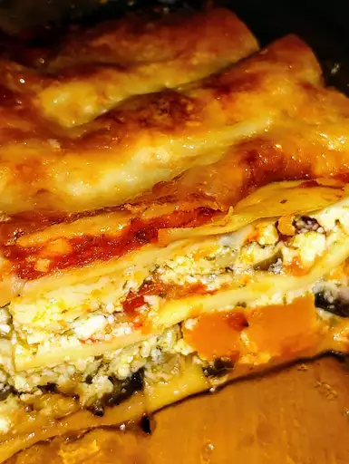

This is a mouth tingling recipe with ricotta, feta, eggplant, tomato, pesto, pumpkin, Parmesan and mozzarella.

Ingredients
2 cups peeled and diced pumpkin
1 eggplant, sliced into 1/2 inch rounds
5 tomatoes
1 pint ricotta cheese
9 ounces crumbled feta cheese
⅔ cup pesto
2 eggs, beaten
salt and pepper to taste
1 (15 ounce) can tomato sauce
fresh pasta sheets
1 ⅓ cups shredded mozzarella cheese
1 cup grated Parmesan cheese
Directions
Preheat oven to 350 degrees F (175 degrees C).
Place pumpkin on a baking sheet and roast in oven until browned and tender, about 30 minutes. Meanwhile, grill eggplant on a charcoal grill or fry in a skillet, turning once, until charred and tender, 10 to 15 minutes. Halve tomatoes and place on baking sheet in oven for last 15 minutes of pumpkin time; cook until tender and wrinkly.
In a medium bowl, stir together ricotta, feta, pesto, eggs, salt and pepper until well mixed. Fold roasted pumpkin into ricotta mixture.
Spoon half of the tomato sauce into a 9x13 baking dish. Lay two pasta sheets over the sauce. Arrange a single layer of eggplant slices over pasta and top with half the ricotta mixture. Cover with two more pasta sheets. Arrange the roasted tomatoes evenly over the sheets and spoon the remaining half the ricotta mixture over the tomatoes. Sprinkle with half the mozzarella. Top with remaining two sheets of pasta. Pour remaining tomato sauce over all and sprinkle with remaining mozzarella and Parmesan.
Bake in preheated oven 30 to 40 minutes, until golden and bubbly.